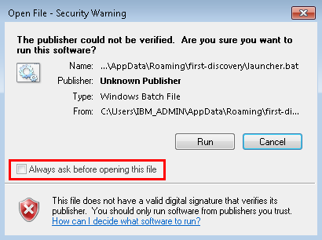

First Discovery Terminal Installation
Overview
This guide is written for IT workers who plan on deploying a First Discovery Terminal on Windows. It is assumed that the reader has a basic understanding of the Windows operating system as well as the capability to edit text-based configurations as needed. Anyone deploying a First Discovery Terminal must have administrator rights on the production system. All in all, it's a fairly painless process. Let's get started.
Installation Procedure
As an administrator, create a new user named "first-discovery", also with administrator privileges.
Log in as the first-discovery user.
Download and install Python 2.7.x for all users. During the installation, make sure to enable the option to "Add python.exe to Path"
Download and install the windows native messaging host
A. Download a zip file of the repository and extract it.
B. Navigate to the newly extracted folder.
C. The Native Host assumes the USB drive is mounted at
E:\. If the USB drive you are using has a different drive letter, edit python-host and change the usbDriveLetter variable fromE:to the correct drive letter (egD:orG:)D. In the extracted folder, run
install-host.batas an administrator. The script will perform these actions:Creates a folder at
C:\Program Files\First-Discovery-Chrome-ExtensionCopies the contents of the repo's folder to the above path.
Sets a registry key to that Chrome can find the Native Messaging Host.
NOTE: if the first-discovery account isn't an administrator,
install-host.batwill not be able to set registry values and native messaging will not work!
Remove all existing desktop icons.
Install the First Discovery Launcher
A. Go here and download a ZIP of the repository. Extract it where you'd like.
B. Navigate to the newly extracted folder
C. Double-click
install-launcher.batD. When prompted, select if you want the shortcut to point to the version of First Discovery with the Search preview or the Electron preview.
E. There should now be one icon on the desktop with the title "Start Here"
F. Double click the icon. This should trigger a security warning. Uncheck the "Always ask before opening this file" box so that the end user doesn't see the warning. You'll need to repeat this step every time you run
install-launcher.bat
G. Chrome should now be open in kiosk mode. If Chrome isn't set as the default browser, it will display a prompt asking if you want to set Chrome as the default browser. Either set Chrome as the default or select the option to not ask again so that the end user doesn't see the prompt. NOTE: if Chrome is already open when the launcher is launched, Chrome will open First Disocvery in a new tab in the existing window instead op launching in kiosk mode.
H. Close the browser window by pressing
Alt-F4orCtrl-wI. Optionally, you can make the desktop icons large by right clicking on the desktop and selecting “View” > “Large icons”
Set first-discovery to auto login on boot.
Downgrade first-discovery user to a standard account.